Dinamísmo y relieve para fachadas y muros de acento
Recubrimientos en formatos lineales elaborados con mármol y cantera auténtica, diseñados para crear texturas tridimensionales y atmósferas de alto impacto.


Selección de piedrines en piedra natural
Recubrimientos fraccionados para dotar de ritmo y textura a cada muro.
Multiplica la profundidad de tus espacios con un diseño táctil inigualable. Pensada tanto para profesionales del diseño como para quienes buscan transformar su propio hogar, nuestra selecta colección de piedrines en piedra natural renueva cualquier superficie a través de:
-
Riqueza visual por relieve: Piezas elaboradas a partir de bloques seleccionados de mármol y cantera natural con acabados rústicos, diseñadas para proyectar un excepcional juego de luces y sombras.
-
Formatos lineales estratégicos: Disponibilidad en medidas versátiles de 15x5 cm y 15 cm x Largo Libre (LL), lo que permite un acople perfecto y una modulación dinámica al momento de instalar.
-
Aplicación contemporánea: El recurso ideal para revestir fachadas imponentes, acentuar muros interiores y resaltar detalles decorativos con una estética profundamente orgánica.
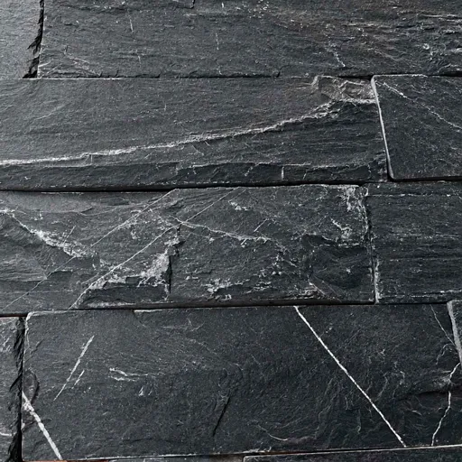
Piedrín Negro Zacatecas
Carácter puro y sofisticación tridimensional. Un ensamblaje lineal en intensos tonos carbón y grafito profundo, esculpido con una textura agreste y natural. Su superficie oscura cobra vida a través de dramáticas vetas blancas cristalinas que cruzan la piedra, creando un contraste espectacular. Una pieza de fuerte carácter arquitectónico, ideal para dotar a muros y fachadas de una elegancia audaz, moderna y de absoluta sofisticación.
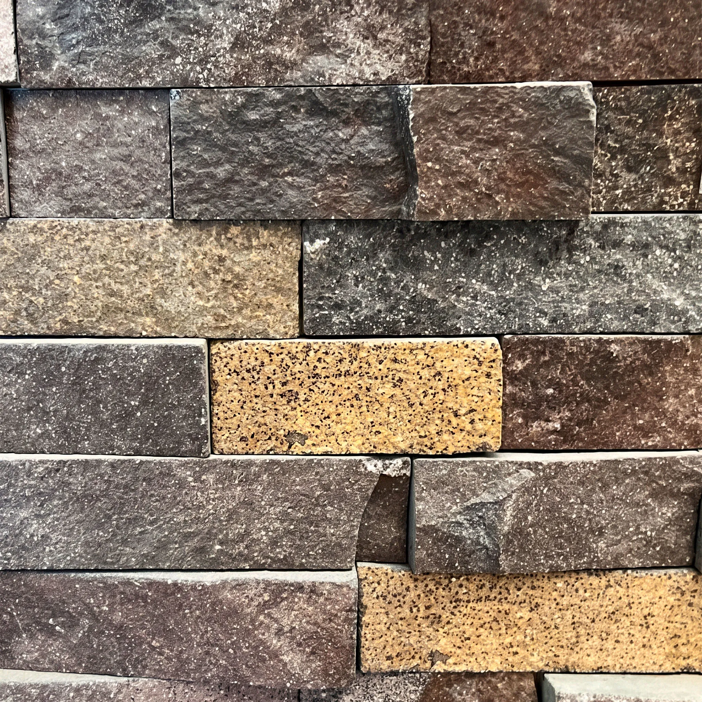
Piedrín Arqueológico
Contraste milenario y textura vibrante. Este cautivador recubrimiento lineal entrelaza bloques de piedra natural en profundos tonos carbón y tierra con luminosos acentos en ocre dorado de textura granítica. El corte natural y escalonado del material multiplica los contrastes, dotando a la superficie de un volumen robusto y elegante. Una obra de arte geológica, ideal para fachadas y muros de acento que buscan calidez, carácter orgánico y una riqueza táctil absoluta.
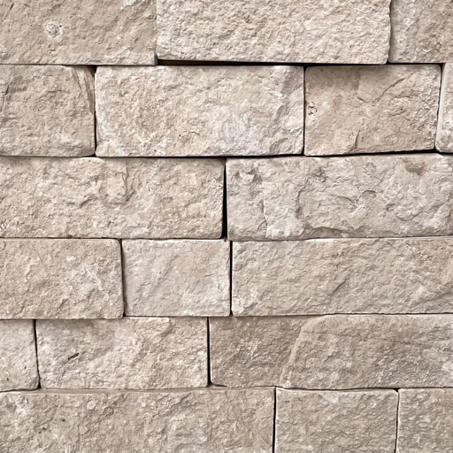
Piedrín Blanco del Desierto
Luminosidad orgánica y relieve elegante. Este recubrimiento lineal ilumina los espacios con su suave paleta en tonos marfil, crema y arena clara. Su ensamblaje en diferentes grosores rompe la monotonía del muro, inyectando un dinamismo táctil y volumetrías muy marcadas. Es la elección impecable para revestir fachadas modernas, muros de acento y áreas interiores, brindando una sensación de amplitud, frescura y sofisticación.
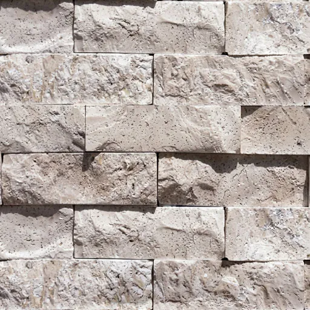
Piedrín Travertino Beige
Elegancia clásica y volumen orgánico. Este recubrimiento lineal exalta la belleza atemporal del travertino con su inconfundible porosidad y serenos tonos arena. La disposición asimétrica de sus piezas proyecta un cautivador juego de luces y sombras, aportando una profundidad visual extraordinaria. La elección ideal para inyectar lujo cálido y refinado a fachadas e interiores.

Piedrín Travertino Rojo
Intensidad terrenal y calidez vibrante. Este imponente recubrimiento lineal fusiona la porosidad natural del travertino con una dramática paleta en tonos terracota, ocre y ámbar oscuro. Su diseño fraccionado y volumétrico rompe con las superficies lisas, ofreciendo una experiencia visual envolvente y altamente texturizada. La elección perfecta para dotar a fachadas e interiores de un carácter fuerte, rústico y sumamente acogedor.
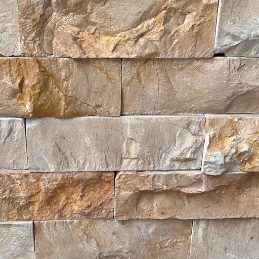
Piedrín Dorado Tepeji
Destellos cálidos y volumen vibrante. Este cautivador recubrimiento lineal ilumina los espacios con su base arena natural y espectaculares oxidaciones doradas y cobrizas. La superposición de sus cortes lineales genera una geometría tridimensional que transforma espacios planos en superficies con movimiento. La elección ideal para revestir fachadas e interiores que exigen luz, textura y un carácter inconfundible.
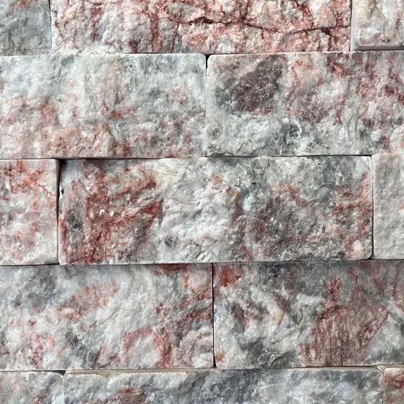
Piedrín Rosa Jaspe
Contraste cristalino y dramatismo orgánico. Este recubrimiento lineal fusiona una base luminosa en tonos blanco y gris cuarzo con profundas e intensas vetas en rosa carmesí. Gracias a su perfil irregular, la luz esculpe cada fragmento del material, revelando una textura rica y llena de carácter arquitectónico. Es la pieza indiscutible para dotar a muros de acento, interiores exclusivos y fachadas de una estética exótica, sofisticada y visualmente irrepetible.
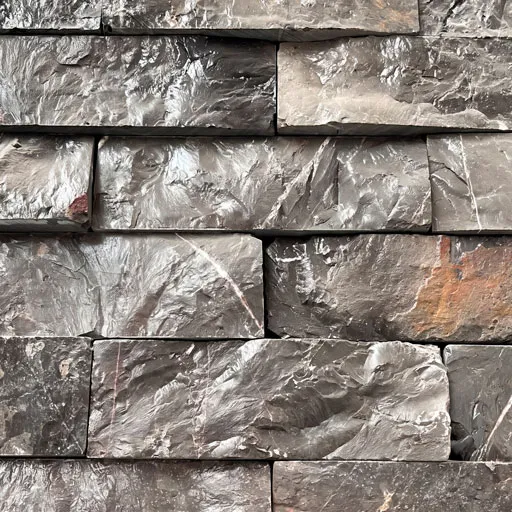
Piedrín Santo Tomás
Fuerza mineral y elegancia oscura. Este recubrimiento lineal domina el espacio con su profunda paleta en tonos grafito y gris carbón, salpicada por ligeras vetas blancas y sutiles oxidaciones cobrizas. La variación de profundidades en su montaje aporta una riqueza estética innegable, haciendo que la propia sombra actúe como un elemento más del diseño. Es la elección definitiva para dotar de vanguardia, carácter y un lujo absoluto a fachadas modernas y muros de acento.
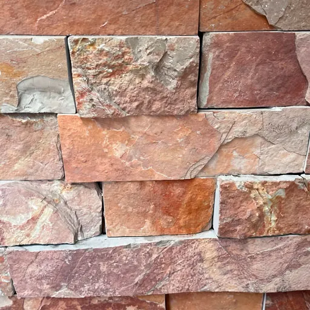
Piedrín Rojo Tlayua
Energía terrenal y calidez vibrante. Este recubrimiento lineal destaca por su rica paleta de tonos terracota, arcilla y sutiles acentos cobrizos. Al presentarse en listones de espesores variables, crea una fachada viva que cambia de aspecto sutilmente según la iluminación del entorno. Una elección audaz y sofisticada, perfecta para convertir fachadas y espacios interiores en el punto focal del proyecto.
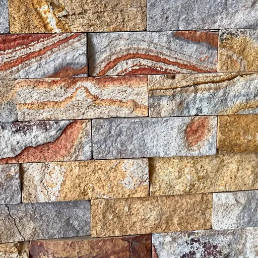
Piedrín Arcoíris
Espectáculo geológico y dinamismo cromático. En este recubrimiento lineal cada pieza exhibe ondas fluidas que transicionan entre grises plomizos, ocres vibrantes, rojos arcilla y arenas cálidas. El acabado en alto relieve de cada pieza se integra armónicamente para construir paramentos con una presencia inquebrantable y dimensional. La elección audaz para inyectar vitalidad, movimiento y un carácter único a fachadas y espacios interiores de autor.
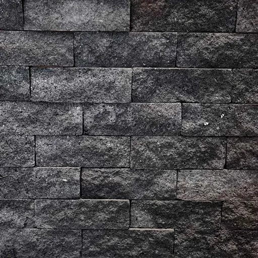
Piedrín Recinto
Herencia volcánica, elegancia atemporal. Una impecable composición geométrica en profundos tonos carbón y ceniza oscura. Forjada con auténtica herencia volcánica, la textura rugosa y porosa de cada bloque atrapa la luz para crear un fascinante juego de sombras y relieve tridimensional. Es el recubrimiento definitivo para elevar muros y fachadas con una elegancia sobria, un minimalismo arquitectónico y un carácter absolutamente atemporal.
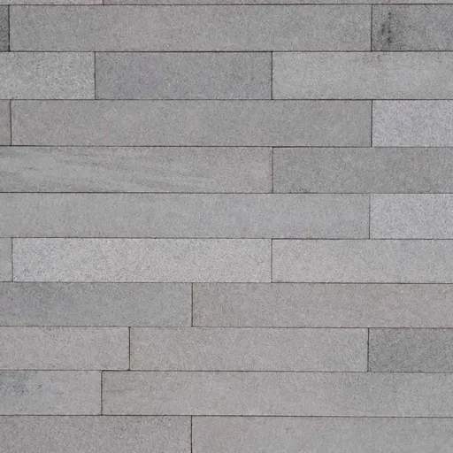
Piedrín Xaltocan
La máxima expresión de la elegancia purista. Un ensamblaje lineal armónico en serenos tonos gris ceniza. Su fina textura y las sutiles variaciones naturales entre cada bloque tejen una superficie de elegancia purista. Una pieza de geometría impecable, ideal para dotar a muros y espacios contemporáneos de luz, sofisticación y un minimalismo arquitectónico absoluto.
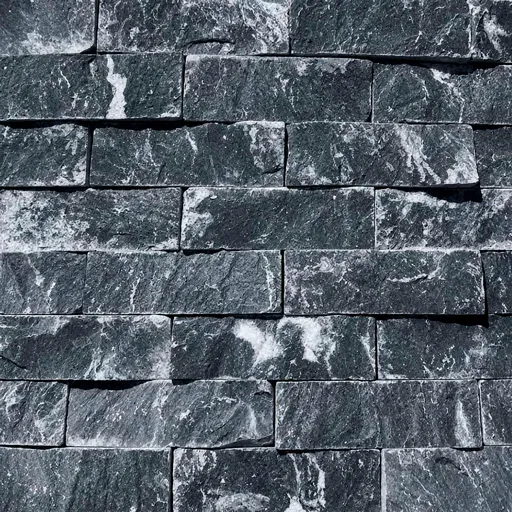
Piedrín Negro Vego
Elegancia audaz labrada en piedra. Una imponente composición en tonos carbón y negro profundo, donde cada bloque de relieve agreste cobra vida al ser atravesado por espectaculares vetas blancas cristalinas. Su textura marcadamente tridimensional crea un cautivador juego de luces y sombras, convirtiéndolo en el recubrimiento estelar para dotar a fachadas y muros de acento con una fuerza arquitectónica audaz, contrastante y de absoluta sofisticación.
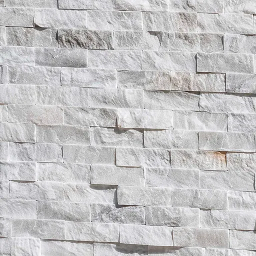
Piedrín Blanco Vego
Luminosidad que redefine tu espacio. Un luminoso ensamblaje natural donde la pureza del blanco y los sutiles matices plata se entrelazan con delicados destellos cálidos. Su textura agreste y marcadamente tridimensional captura la luz del entorno, creando un elegante y suave juego de sombras. Una composición geométrica impecable, ideal para inundar de amplitud, frescura y absoluta sofisticación contemporánea cualquier fachada o espacio interior.
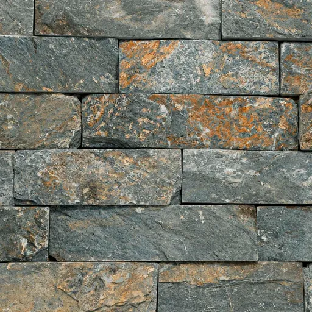
Piedrín Verde Militar
El instinto salvaje del diseño industrial. Una fusión audaz de tonos gris-verde profundos y vibrantes acentos cobrizos oxidados. Este revestimiento de piedra natural, con su textura rugosa y relieve tridimensional, aporta una sofisticación orgánica y un carácter inigualable a cualquier espacio. Es la elección perfecta para quienes buscan un equilibrio entre la robustez industrial y la calidez de la naturaleza.
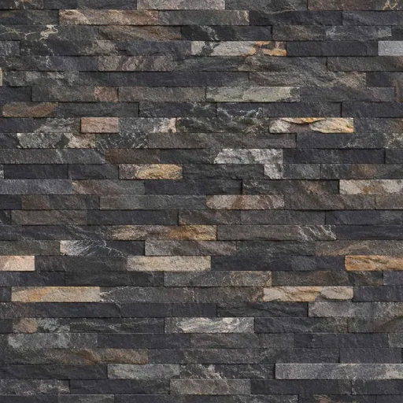
Piedrín Negro Mixteco
Sobriedad profunda, calidez terrenal. Un cautivador mosaico lineal que entrelaza la profunda sobriedad del carbón con cálidos destellos en tonos arena, óxido y tierra natural. Su relieve rústico y formato tridimensional generan un exquisito juego de sombras, convirtiéndolo en el revestimiento ideal para transformar muros y fachadas en auténticas piezas de diseño contemporáneo que irradian tanto elegancia como calidez.
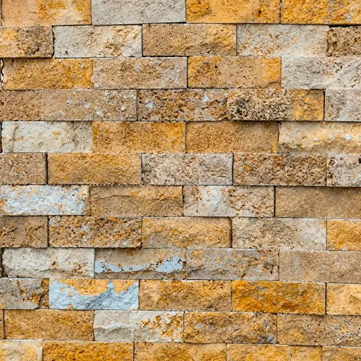
Piedrín Oro Viejo
La calidez del sol poniente tallada en relieve eterno. Un vibrante ensamblaje lineal de piedra natural que fusiona serenos tonos ocre, dorados radiantes y beiges arenosos. Su textura de alto relieve rústico crea un cautivador juego tridimensional de luces y sombras. Es la elección definitiva para inyectar lujo natural, una calidez envolvente y un carácter sofisticado y atemporal en fachadas o muros de acento contemporáneos.
Tu visión no tiene límites, nuestra selección tampoco.
Estos son solo algunos de los favoritos. Contamos con una gran variedad de colores, formatos y acabados para cada estilo arquitectónico.
Explora la colección completa o platícanos qué tienes en mente para tu obra.

¿Listo para iniciar tu proyecto?
Hablemos.
Te daremos el mejor precio directo de fábrica y opciones de envío a tu medida.
Ya sea que busques el material ideal para una fachada, necesites ayuda para calcular los metros cuadrados de tu espacio o quieras conocer nuestros tiempos de entrega, escríbenos.


Expertos en extracción, transformación y comercialización de piedras naturales en México desde hace más de 35 años.
Al ser un material 100% natural, cada pieza presenta variaciones únicas de tono, veta y textura, características que forman parte de su belleza y autenticidad.
-
 Arcomex Canteras Sucursal Ganaderos
Arcomex Canteras Sucursal GanaderosC. Ganaderos 293, Valle del Sur, Iztapalapa, 09819 Ciudad de México, CDMX
+52 55 9180 3308 -
Arcomex Canteras Querétaro
Carr. Querétaro, Central, San Luis, S.L.P, Km 16 4, Col. El Salitre, 76127 Santiago de Querétaro, Qro.
+52 442 251 6781 -
Arcomex Canteras Cedis
50394 La Presita Segundo Cuartel, Méx.
+52 558 854 6022
-
Corporativo Arcomex
C. Ganaderos 293, Valle del Sur, Iztapalapa, 09819 Ciudad de México, CDMX
-
+52 55 8854 6022
 Teléfono Principal
Teléfono Principal -
 Correo Electrónico
Correo Electrónicocontacto@arcomexcanteras.com.mx